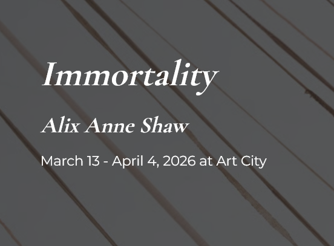

Alix Anne Shaw: Immortality
Immortality
Immortality presents a large-scale model of an endlessly reproducing cancer cell, referencing the HeLa cell line taken in 1951 from Henrietta Lacks, an African American woman treated for cervical cancer. Without her knowledge or consent, a doctor collected her cells, discovering they could survive and multiply outside the body. These “immortal” cells became foundational to modern medical research and have contributed to countless scientific breakthroughs worldwide.
Henrietta Lacks, however, died at 31, never knowing of her cells’ impact. Her family remained unaware of their use for decades and received no compensation until a legal settlement in 2023, seventy-two years after her death. The work confronts this history of exploitation and the ethics of medical research, while examining the meaning of immortality.
Constructed from women’s nylons in a spectrum of skin tones, the installation references both Henrietta’s cervical cancer and the racist legacy of “flesh-tone” consumer products. The multiplicity of hues also evokes the vast global population that has benefited from her cells.
The sculpture depicts a HeLa cell undergoing cell death while simultaneously metastasizing toward the viewer, complicating the notion of “immortality.” It asks what has truly endured: Henrietta, the cancer, or systemic racism—and whether such forces can ever be brought to an end. —
Alix Anne Shaw (Ze/Zir) is a Milwaukee-based artist and poet. Zir work has been exhibited at galleries including the Richard Gray Gallery in Chicago, the Museum of Wisconsin Art, Kriti Gallery in India, and the Czong Institute for Contemporary Art in South Korea.